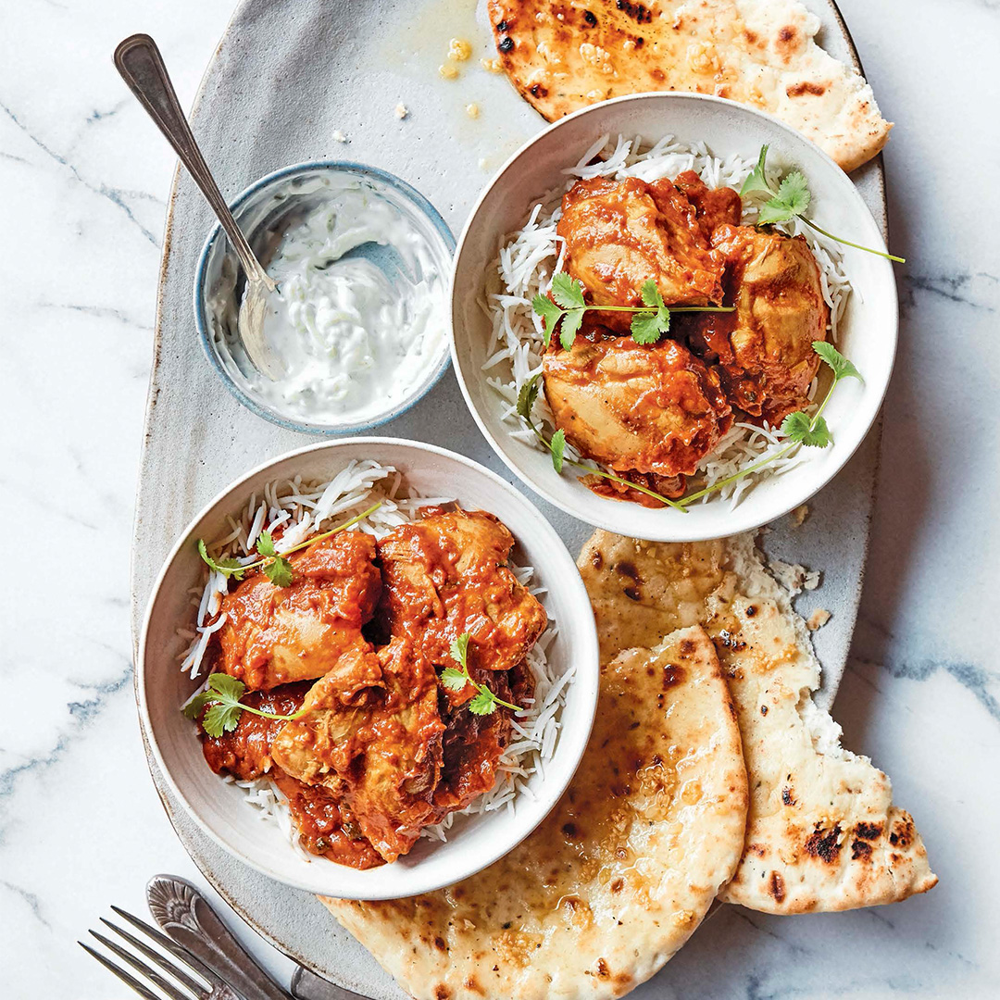

Butter Chicken
Butter chicken, also known as chicken makhani, is more like a treat than an entrée—and quite possibly the most
popular dish at any Indian restaurant. This heavenly, creamy curry highlights the robust flavors of Kashmiri chile,
dried fenugreek leaves, and garam masala. Served with classic basmati rice and naan, this dish evokes excitement
on any menu.
Garam masala literally translates to “warm spice mix,” and it is the quintessential Indian spice blend.
It gives warmth and depth to dishes and pairs perfectly with red or green chile for a hearty, aromatic flavor.
Every region (and family) across India has its own version. My mom’s recipe calls for twenty-one whole roasted spices,
some of which are hard to find, and it takes days to make. Here is a simplified version with a similar
authentic flavor.

Ingredients
- 2 tbsp ghee
- 1 large yellow onion finely diced
- 2 lbs chicken thighs boneless, skinless, halved and patted dry
- 1 cup tomatoe puree canned
- 1/2 cup Water
- 1 tbsp Ginger fresh, grated
- 1 tbsp garlic, minced
- 2 tsp kashmiri red chile powder or another mild red chile powder
- 2 tsp kosher salt
- 1/2 tsp tumeric ground
- 1/2 cup coconut cream canned (see notes)
- 2 tbsp tomatoe paste
- 2 tbsp fenugreek leaves dried
- 2 tsp sugar
- 1/2 cup cilantro fresh
- 1 tsp garam masala (recipe below)
garam masala
- 2 tbsp black peppercorns
- 2 tbsp cloves
- 1 tbsp cinnamon sticks crushed
- 2-5 green cardamom pods (about 2 teaspoons)
- 1 tbsp black cumin seed or cumin seeds
Rice
- 1 cup Basmati rice
- 1 1/2 cups Water
- 1 tsp kosher salt
Instructions
Garam Masala
- Select the normal Sauté setting on the Instant Pot. Lightly toast each spice, one at a time, by adding it to the pot and stirring continuously until aromatic, about 1 minute each. Make sure not to burn them. The goal is to remove any residual moisture so they are easy to grind.
- As the spices are toasted, transfer them to a plate and let cool completely. Grind the spices in a spice grinder to make a fine powder.
- Store in an airtight container in a cool, dry place away from direct sunlight for up to 6 months.
Butter Chicken
- Select the high Sauté setting on the Instant Pot and heat the ghee. Add the onion and cook until translucent, 4 to 5 minutes. Press the Cancel button to turn off the Instant Pot. Add the chicken, tomato puree, water, ginger, garlic, chile powder, salt, garam masala, and turmeric and stir to combine.
- To make the rice: In a 1 1/2-quart stainless-steel bowl that will fit in the Instant Pot, stir together the rice, water, and salt. Place a tall steam rack in the pot, making sure its legs are resting on the bottom. Place the bowl of rice on the rack.
- Secure the lid and set the Pressure Release to Sealing. Select the Pressure Cook or Manual setting and set the cooking time for 5 minutes at high pressure.
- Let the pressure release naturally for 5 minutes, then move the Pressure Release to Venting to release any remaining steam. Open the pot. Using heat-resistant mitts, place the bowl of rice on a trivet and remove the tall steam rack. Add to the pot the coconut cream, tomato paste, fenugreek, and sugar and stir to combine. Select the high Sauté setting and cook until the curry comes to a boil and is heated through, about 2 minutes. Press the Cancel button to turn off the Instant Pot.
- Spoon the rice onto plates and ladle the curry over the top. Sprinkle with the cilantro and serve.
Note
The unsweetened coconut cream used in the recipe (not to be confused with the sweetened coconut cream used primarily in cocktails) can be found canned in grocery stores. It
can be replaced with the cream from a can of regular full-fat coconut milk. Put the can of coconut milk in the refrigerator for 4 to 5 hours or in the freezer for 5 minutes to separate the
cream from the water, then open the can and scoop off the cream from the top of the coconut water.
This recipe was taken from "The Essential Indian Instant Pot Cookbook" by Archana Mundhe